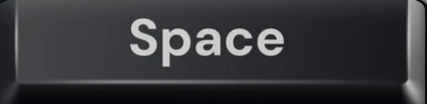
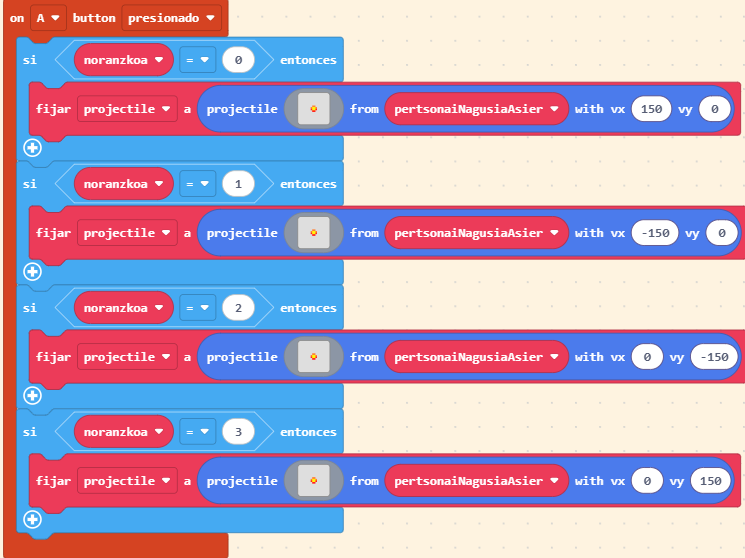

| Botoiak | Argazkia | Azalpena |
|---|---|---|
 |
Pertsonai nagusia ordenagailuko teklatuan fletxitako gora ematen dioenean, pertsonai nagusia gorputzaren norabidea aldatuko da eta goraka joango da. | |
 |
Pertsonai nagusia ordenagailuko teklatuan fletxitako behera ematen dioenean, pertsonai nagusia gorputzaren norabidea aldatuko da eta beheraka joango da. | |
 |
Pertsonai nagusia ordenagailuko teklatuan fletxitako ezkerrean ematen dioenean, pertsonai nagusia gorputzaren norabidea aldatuko da eta ezkerrara joango da. | |
 |
Pertsonai nagusia ordenagailuko teklatuan fletxitako eskubian ematen dioenean, pertsonai nagusia gorputzaren norabidea aldatuko da eta eskubira joango da. | |
 |
 |
Pertsonai nagusia ordenagailuko teklatuan fletxitako espazioari ematen dioenean, pertsonai nagusiaren gorputzetik projektile batzuk ateratzen dira. Zenbat eta gehiago eman, projektile gehiago aterako dira. Projektile hauek etsaiak hiltzeko erabiltzen dira. |
Itzuli nagusira